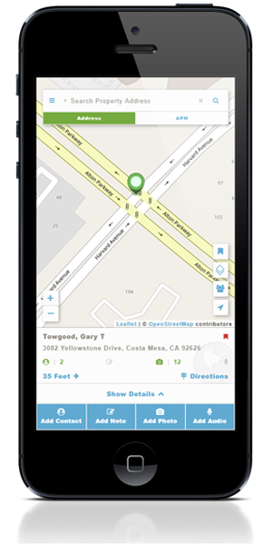
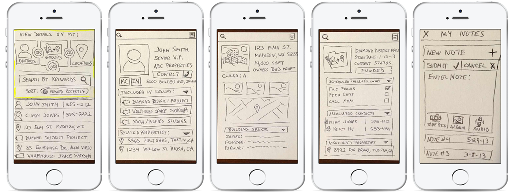
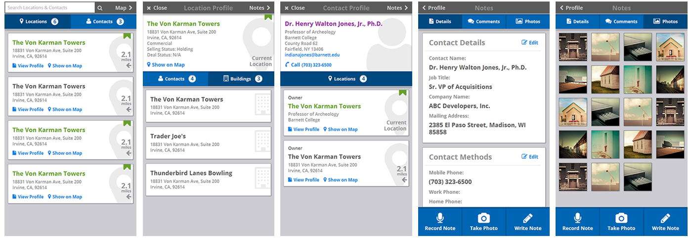
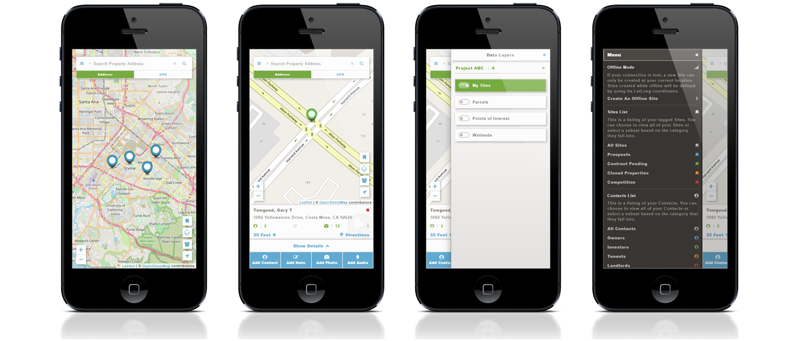
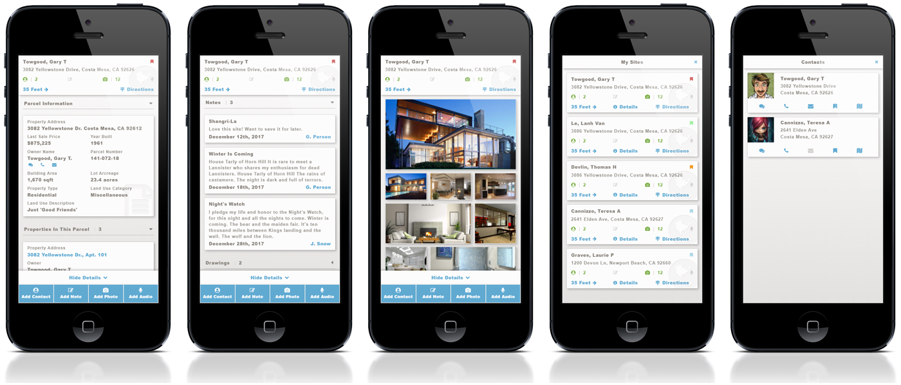

Real Estate
LandVision is a cloud-based mapping application that helps commercial real estate brokers, builders, and developers find their next opportunities.

2017
Design Lead / UI Engineer
Myself and a Lead Developer
The company's flagship product was an established SaaS application that had existed on the desktop for many years.
This project was initiated to leverage mobile technology to provide users with access to their data while in the field and allow them to capture and sync their own data (notes, photos, etc.) for use within the desktop product.
The project began life in 2013 as 'The Broker App' before being put on hold and picked up again for a 2017 release. The initial concept was to create a product that would serve as a spatially-aware CRM (customer relationship management) tool, allowing brokers to associate locations with their contacts and add insights during site visits.
I sketched some screens on the back of index cards to account for the primary data elements (locations, contacts), the container that linked them (project), and the child elements that would belong to each (notes). The index cards were photographed and added to a Marvel prototype for review.

Original paper-prototype (Main screen, Contact, Location, Project, Notes)
After review, the decision was made to simplify things by removing the concept of 'Project'. The application become more property-focused with the intent to allow the user to create/import lists of properties and contacts, define associations between them, and add notes and media.
Also, around this time, I had began work on Digital Map Products' initial UI Library. Typography, Color Palettes, and Iconography were being defined. I started working with SASS to create modular CSS that could be more easily maintained than image assets. Google's Material had just been released and card-based interfaces were becoming popular. The 2nd iteration was created using HTML and the new CSS.

HTML templates using CSS compiled from SASS partials
After incorporating feedback received on the second iteration from engineering and from existing LandVision customers, development began. The completed product was released to select customers to gather feedback on performance and usability. Ultimately, all follow-up work was placed on hold until 2017. By then, the UI library had evolved and been tested in production with other projects. The goal and design of the product were largely unchanged save for additional functionality around managing and syncing the user's data.
I worked on the 1.0.0 release with a team comprised of a lead developer and product manager to develop the production templates below. PhoneGap was used to access native features on both iOS and Android releases. For debugging of presentational elements, I used Chrome's Inspector, XCode, and Ghostlab.

Home Screen, Location Summary, Layers UI, App Menu
